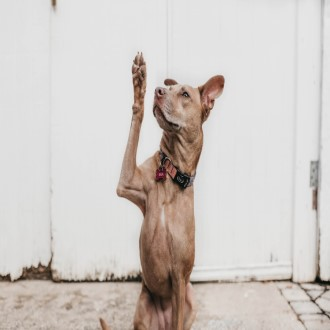
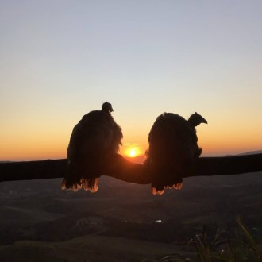
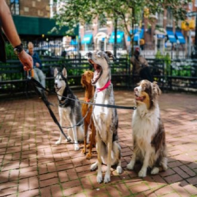
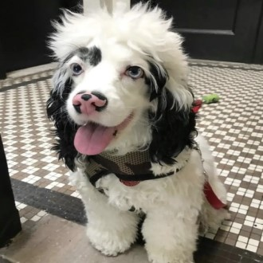
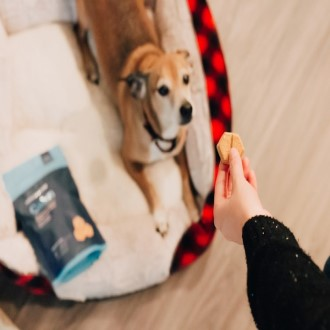
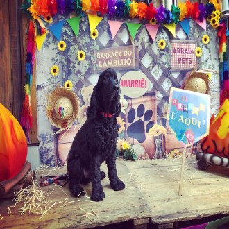
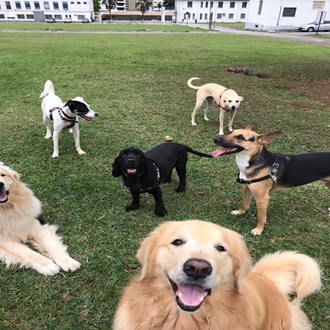

-
HOME
Precisa de um cuidador de Pet?
Conte com a Pet Sitter LukeCocker para cuidar com carinho do seu PET enquanto você estiver ocupada (o).
Localizada em São Paulo-SP, oferecemos serviços de qualidade para garantir o bem-estar do seu animal de estimação. Cuidamos bem do seu PET, oferecemos serviços de Pet Sitting e Dog Walker em São Paulo, com amor e dedicação aos amiguinhos de 4 patas. -
SOBRE NÓS
Eu sou o seu novo PET SITTER
OLÁ, ME CHAMO GUTO ROMANO E SOU O SEU NOVO PET SITTER. Apaixonado por animais, dedicado e amoroso estou pronto para GARANTIR que o seu PET receba todo o carinho e atenção necessários na sua ausência.
A Pet Sitter LukeCocker foi criada para cuidar dos seus animais de estimações em São Paulo-SP. Fundada em 2022 para cuidar do seu PET quando você estiver na correria do dia a dia e, caso precise fazer alguma viajem e não tem com quem deixar seu o seu PET.
Conte com a “Pet Sitter LukeCocker” para proporcionar o melhor cuidado para o seu companheiro de quatro patas.Serviço: DOG WALKER 01
DOG WALKER em Grupo
DOG WALKER, PASSEIOS EM GRUPO com mais de "um PET".
Interação e passeio com o PET durante todo período da visita de 1 hora.Serviço: DOG WALKER 02
DOG WALKER individual
DOG WALKER, PASSEIO INDIVIDUAL.
Interação com o PET durante todo período da visita de 1 hora. Ou um passeio de 15 a 30 minutos caso seja um PET mais debilitado.SERVIÇO: PET SITTER 03
PET SITTER
PET SITTER, visita com duração de 1 dia.
Cuido do seu PET quando você estiver ocupada (o), passeios, alimentação e hidratação, limpeza do ambiente em que ele faz as necessidades, limpeza e manutenção da caixa de areia para os gatos, administração de medicamentos (Via oral, prescrição do veterinário e pelo tutor), cuidados básicos com a casa. Como por exemplo retirar lixo, correio, regar plantinhas, abrir e fechar janelas.NOSSOS PREÇOS
PREÇOS dos Serviços
- Passeios em grupo R$35,00.
- Passeios individuais R$50,00.
- Serviço Pet Sitter (Residência
do próprio PET) R$ 120,00
Atendimento Premium com cuidados especiais.
CONTATO
Agende o horário para o seu PET com antecedência!
- Segunda-feira: Consulte os horários
- Terça-feira: Consulte os horários
- Quarta-feira: Consulte os horários
- Quinta-feira: Consulte os horários
- Sexta-feira: Consulte os horários
- Sábado: 6:00 às 22:00
- Domingo: 6:00 às 20:00
Ligue a qualquer hora:
+55 11 96395-7427